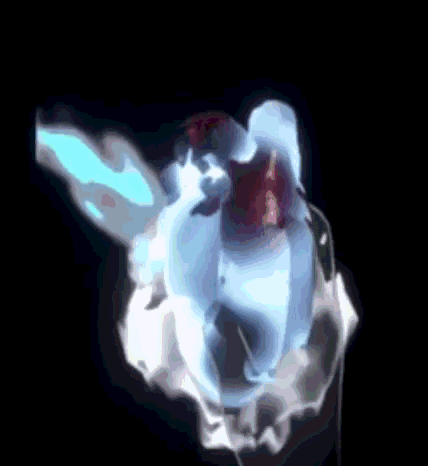
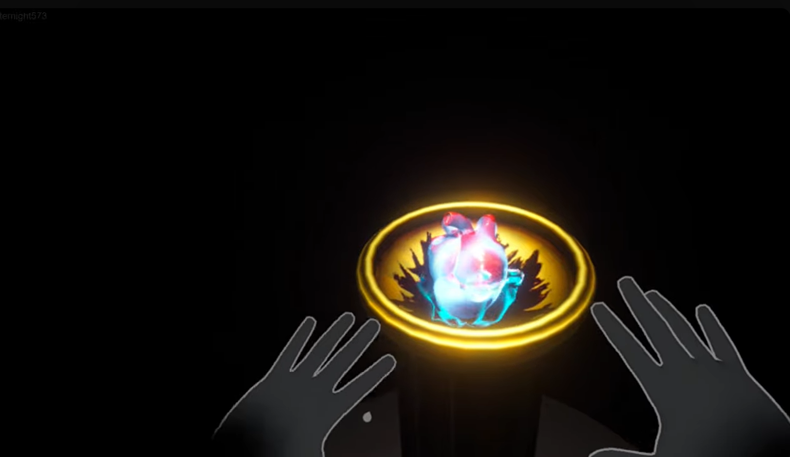
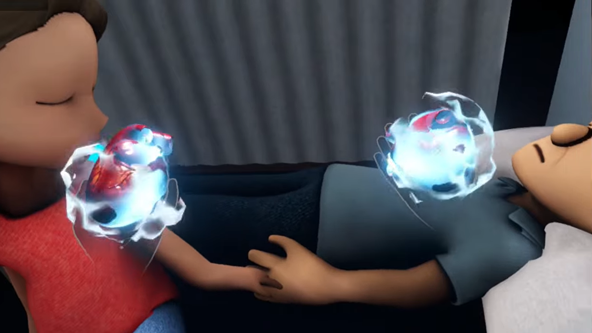
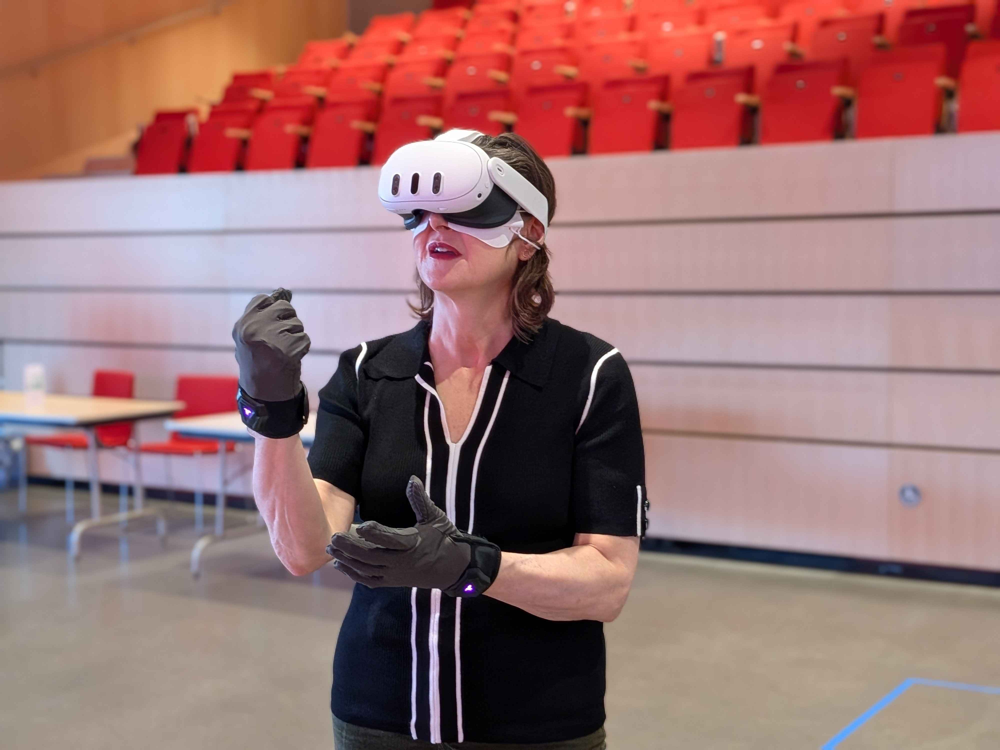

01 Overview
I pitched with 4 other students to create TACIT, an R&D project exploring how haptic feedback can contribute meaningfully to emotional storytelling in virtual reality so that it is essential, not optional.
While most VR experiences use haptics as reactive feedback such as weapon recoil and button confirmation, our team was interested in how touch, combined with minimal audiovisual elements, could be used proactively to convey an emtional narrative and create a more immersive experience. Over fourteen weeks, we employed a bottom-up design strategy with rapid prototyping and playtesting at its core, intentionally going from isolated haptic pattern exploration to building a coherent narrative experience, so that our final product was rigorously a result of a haptic-centric design framework rather than a narrative with haptics layered on top.
These efforts culminated in In The End, a fifteen-minute narrative VR experience where players assume the role of Death feeling the final heartbeats of dying souls and experiencing the weight of their actions through a pair of haptic gloves. The project was later selected for multiple festivals and exhibitions, including Laval Virtual Student Competition, AWE Art Festival, and SONA Immersive Arts Festival.
02 My Main Contributions
Research & Playtesting
Led brainstorming and playtesting strategy, creating user testing procedures and evaluation analysis for weekly prototype validation.
Product Leadership
Innovated and implemented a playtesting-driven development methodology that balanced process and product vision through exploration, iteration, and final production.
Documentation & Communication
Maintained design vision and rationale, research findings, conference materials, and public-facing project communication.
Development Artifacts
Contributed to prototypes implementation, voiceover recording, haptic design finetuning, and final experience polish refinements.
03 Building a Haptic-Centric Design Framework
Through secondary research and interviews with psychology and haptic experts, we knew that haptic itself cannot trigger emotions directly. Instead, it has to paired with supporting audio and visual cues that help players interpret the sensations in a meaningful way. Therefore, balancing the amount of contextual information with the haptic sensation itself was a critical design challenge.
To navigate this challenge, I adopted a bottom-up design strategy where we started by exploring haptic patterns in isolation and then gradually layered on contextual elements to understand their influence on emotional interpretation.
On the other hand, we also had to ensure that our final experience was a cohesive narrative and not just a collection of haptic patterns. With that, a top-down narrative structure was also necessary to the team's exploration.
Thus, with each prototypes, our goals became two folds:
- To identify which haptic patterns were most emotionally effective with our technology (bHaptics TactGlove DK2) and what contextual elements were necessary for their interpretation.
- To identify patterns that have highest potential for innovative gameplay and storytelling.
- Removing visual and auditory cues for 15 different pure haptic interpretation testing
- Vibrotactile parameter variation including rhythm, intensity, duration, and decay
- Collecting sense memories associated with different haptic sensations, contextual or not
- Certain vibration patterns consistently evoked specific physical memories and associations regardless of context, such as heartbeat.
- Some were ambiguous until paird with hand movements, such as crushing and slapping.
- Still others were consistently described as abstract, and could elicit a wide range, even out of the world associations, such as residual impact to hand dissolving.
- Created 9 different contextual prototypes each with a haptic pattern but togglable different audio / visual / or narrative contexts
- A/B tested each of them fortheir emotional impact using the emotional wheel
- Prioritized the combinations with the highest gameplay and emotional impact and innovation potential
- Visual cues influence the anticipated haptic sensations.
- Audio cues could dominate the emotional interpretation of the haptics even more than the visuals.
- Designing a self-contained haptic moment and accumulate their emotional weight through repetition and narrative progression
- Testing if the individual moments carry our intended emotions with 60+ participants
- Iteratively building out the narrative structure with progressive haptic interaction mechanics tutorial
- Player demographics influence the effectiveness of haptic communication.
- Non-gamers treat haptics as feedback rather than gameplay mechanics, but nonetheless feel the narrative weight augmented.
- Gamers treat haptics as gameplay mechanics, but the emotional weight is not necessarily diminished.

Three Phases of Development
 PHASE 01
PHASE 01
Haptic Pattern Exploration
Key activities
Finding
 PHASE 02
PHASE 02
Contextual Prototypes
Key activities
Finding
 PHASE 03
PHASE 03
Narrative Synthesis
Key activities
Finding
04 Designing the Heart Moment
The haptic moment that has to be repeated is our minimal unit of emotional storytelling, and because we chose to create a "heart-crushing" experience with the heartbeat and crushing moment, the heart moment became the most critical and challenging moment to design and iterate on.
Heartbeat
Proactive Gameplay Cue
 Players must interpret tactile information to determine who
is ready to die.
Players must interpret tactile information to determine who
is ready to die.
Crushing
Weight of Action

Players physically perform the irreversible action themselves.Residual Impact
Narrative Consequence
 The lingering vibration communicates acceptance, resistance,
or emotional aftermath.
The lingering vibration communicates acceptance, resistance,
or emotional aftermath.
A lot of the iterations were not linear. For example, a lot of designing for the heartbeat moment were around how to granularly create distinguishable vibration patterns, and how much audio and visual information should be layered on top, while the residual impact was a sensation added much later in the process after we realized that the heartbeat and crushing alone were not enough to carry the emotional weight of the moment, and that we needed a way to communicate the emotional aftermath of the action.


05 Haptic Mechanic Progression
The haptic moment was designed to be repeated so that the last time it was performed, it would have accumulated to the emotional climax of the experience.
Narrative Synopsis
The players would assume the role of Death, and with the guidance of a companion character, they would perform the heart-soul-releasing multiple times, only to realized that the last soul to release, was the companion who has been with them this whole journey.
Our narrative designer and writer Michael Wong created a structure where haptic gameplay scenes would increase in complexity, while the narrative scenes in between would gradually reveal the companion character's backstory and emotional connection to the player.
Teaching the unnatural haptic mechanics
Through previous playtests, we found that haptics, or any touch-based sensations, are so intuitive to players that they often struggle to understand that they can be used as proactive gameplay mechanics rather than just reactive feedback.
To address this, I designed the progression of neccessary gameplay information (such as when to pay attention to the heartbeat, how to perform the crushing action, and determining whether these information should be within gameplay or done through onboarding), so that players would naturally learn how to interpret the supposedly unnatural haptic sensations and perform the necessary interactions through the narrative and gameplay progression. Working closely with Michael, we integrated these information into the narrative dialogues. (and I performed as the voice actor of the companion character!! -- It was a very fun experience!)
With Jing and Jack, our technical designers and gameplay programmers, we finetuned the vibrotactile parameters and interaction timing, so that each encounter would build toward the companion's soul release as the emotional climax of the experience.




06 Testing Methodology and Findings
Two most important aspects I contributed to our project was owning the playtesting strategy, including the design, facilitation, and analysis of the playtests, as well as the insights synthesis that informed our design decisions throughout the development process.
In the first phase of the project, while testing with the haptic patterns and the contextual A/B prototypes, using think-aloud protocol and observation, along with interviews after tha playtests with the emotional wheel, I was able to come up with a diagram that summarized the relationship between haptic sensations, contextual elements, and emotional interpretations, and the findings are presented as follows:
Sense Memories Drive Emotions
Players interpreted haptic sensations through familiar bodily experiences, sometimes enhaced by hand movements, rather than abstract vibration patterns, and that's what's ultimately driving their emotional interpretations.
Context Shapes Meaning
The same haptic sensation could produce dramatically different emotional interpretations depending on surrounding audiovisual context. Visuals drive anticipated sensations, and audio cues significantly influence emotional interpretation, so it must be added thoughtfully to ensure haptics still remain center stage.
Different Players Read Haptics Differently
Experienced gamers often treated haptics as gameplay information, while non-gamers described stronger feelings of immersion and naturalism.

For the final experience, over more than sixty playtests, with the advisement from our faculty Vivian Shen and Heather Kelley, I created a post-experience quantitative survey combining the techniques from PANAS and Plutchik's Wheel of Emotions, along with the supporting qualitative semi-structured interview process to better understand how players interpreted each section of the narrative.

07 Playtesting as Production
Because TACIT was simultaneously a research project and a production project, our greatest challenge was balancing exploration with execution.
I developed a playtesting-driven workflow where each week generated actionable findings that informed both design direction and production priorities. This process allowed the team to rapidly investigate new ideas while maintaining momentum toward a polished final experience.
A lot my focus throughout the semster was on designing agendas, brainstorming activities, playtesting goals to ensure the team was able to follow through the aforementioned design frameworks and also meet the dual goals of research and production, maintaining a rigorous process while also being flexible to the needs of the team and the project.
Scoping Down
Towards the second half of the semester, the art team had unforeseen personal emergencies, which resulted in a significant reduction of our final experience scope. Originally designed to be a 5-act experience with 2 more levels so that the emotional buildup with the companion character would be more gradual, we decided to cut to 3 acts, focusing on polishing the heart moment and the companion character's final scene, which were the most critical and innovative parts of our experience, and cut the middle levels that were more about emotional buildup and less about unique haptic interactions. This decision was not only necessary for us to be able to finish a polished final experience, but also aligned with our design philosophy of prioritizing quality over quantity, and ensuring that every element in our experience was essential and meaningful.

08 Documentation and Knowledge Sharing
One of our goals was to contribute more than a single experience.
Throughout development, I maintained documentation intended to capture our methodology, findings, and design rationale. These materials eventually supported conference submissions, public communication, and future designers interested in exploring emotional haptics. Reviewer feedback consistently highlighted the maturity and clarity of the project's supporting materials around how tactile sensations contribute to emotional storytelling.
09 Impact
TACIT's final experience, In The End, was selected for multiple exhibitions and festivals, including Laval Virtual, AWE Art Festival, and SONA Immersive Arts Festival.



This is an interesting concept for a game that offers more than the usual reward system. - an important piece of work.
10 Acknowledgements
I had the absolute honor to have worked with, Jing Chung (VR software architect, gameplay programmer, game designer, technical artist, UX optimizer), Jack Chou (gameplay programmer, game designer), Michael Wong (narrative designer, writer, sound designer, composer, animation rigger), Yufei Chen (3D character artist), Alex Hall (3D environment artist and VR researcher), faculty advisors Vivian Shen and Heather Kelley, consultant Drew Davidson, Dave Culyba, Mike Christel and many many playtesters within and outside of ETC, who made our 14 weeks filled with playtesting fun and rewarding, and helped us create this extraordinary project In The End that went to so many places! I'm ever so greatful.